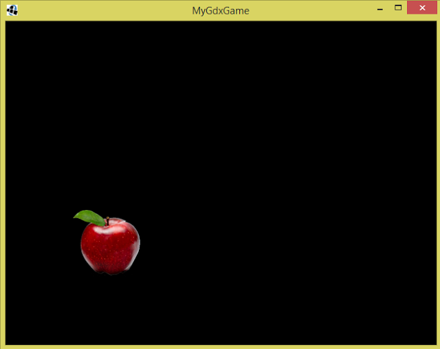

SpriteBatch
Sebuah game engine mestilah mempunyai kebolehan untuk memaparkan gambar pada skrin. Gambar untuk sesebuah game boleh dibahagikan kepada beberapa kategori seperti gambar sprite, gambar latar belakang, gambar menu, dan sebagainya. Sekarang kita akan lihat gambar sprite terlebih dahulu.
Sprite ialah gambar-gambar yang diasingkan daripada gambar background. Contohnya dalam game Angry Bird ialah bird, pig, kayu, dan batu. Tujuannya adalah untuk memudahkan kita untuk menggerakkan objek-objeck tersebut hanya dengan mengubah koordinat kedudukan.
Untuk memaparkan sprite menggunakan libGDX, kita boleh menggunakan class SpriteBatch. Sebelum itu, kita akan tukar code supaya lebih teratur dahulu.
Game dan screen
Sebelum ini kita ada lihat struktur program libGDX menggunakan class
Game dan interface Screen. Disebabkan Screen ialah interface, kita akan
buat satu class BaseScreen untuk implements interface Screen. Kemudian
untuk buat Screen yang baru, kita hanya perlu extends class BaseScreen.
Tips ini adalah supaya kita tidak perlu tulis semula setiap
method-method interface tersebut kerana kita tidak menggunakan semua
method, hanya beberapa method sahaja. Jadi, dengan BaseScreen, code kita
akan nampak lebih kemas.
Saya suka buat package baru untuk meletakkan semua class Screen. Jadi,
saya buat package com.mygdx.game.screen. Class BaseScreen akan
kelihatan seperti berikut:
package com.mygdx.game.screen;
import com.badlogic.gdx.Screen;
import com.mygdx.game.MyGdxGame;
public class BaseScreen implements Screen {
MyGdxGame game;
public BaseScreen(MyGdxGame game) {
this.game = game;
}
@Override
public void show() { }
@Override
public void render(float delta) { }
@Override
public void resize(int width, int height) { }
@Override
public void pause() { }
@Override
public void resume() { }
@Override
public void hide() { }
@Override
public void dispose() { }
}
Perhatikan kita juga ada menambah constructor untuk menyimpan reference
kepada class MyGdxGame supaya senang untuk guna mana-mana method dari
situ.
Kemudian, barulah kita akan betul-betul buat Screen untuk menggunakan
Spritebatch. Screen ini kita akan namakan sebagai GameScreen. Code
GameScreen adalah seperti berikut:
package com.mygdx.game.screen;
import com.mygdx.game.MyGdxGame;
public class GameScreen extends BaseScreen {
public GameScreen(MyGdxGame game) {
super(game);
}
@Override
public void show() {
}
@Override
public void render(float delta) {
}
@Override
public void dispose() {
}
}
Kita hanya akan gunakan method show(), render(), dan dispose() buat masa
sekarang.
Akhir sekali kita akan tukar code untuk MyGdxGame untuk extends class Game, seperti berikut:
package com.mygdx.game;
import com.badlogic.gdx.Game;
import com.badlogic.gdx.Screen;
import com.mygdx.game.screen.GameScreen;
public class MyGdxGame extends Game {
Screen currentScreen;
@Override
public void create() {
currentScreen = new GameScreen(this);
this.setScreen(currentScreen);
}
@Override
public void dispose() {
currentScreen.dispose();
}
}
Di sini kita tetapkan Screen sebaik sahaja Game bermula di method
create() menggunakan method setScreen(). Satu lagi benda yang penting
ialah method dispose() untuk interface Screen tidak akan dipanggil
secara automatik seperti yang tertulis di sini, jadi kita mesti panggil
method dispose() Screen di dalam method dispose() Game secara manual.
Texture
Texture ialah class yang kita boleh gunakan untuk load gambar daripada
file. Constructor untuk class Texture memerlukan parameter string untuk
path ke file tersebut. Path ke file tersebut bergantung kepada folder
assets untuk project. Contohnya, jika kita letak gambar di
android/assets/apple.png, kita perlu letakkan string apple.png. Jika
anda tidak tick project untuk Android, folder assets akan berada di
core/assets.
Kita akan initialize class SpriteBatch dan class Texture di dalam method
show().
@Override
public void show() {
batch = new SpriteBatch();
image = new Texture("apple.png");
}
Rendering
Untuk menggunakan SpriteBatch, guna method batch.begin(), kemudian guna
mana-mana method untuk melukis seperti batch.draw(), dan diakhiri dengan
method batch.end(). Anda boleh pergi ke sini
untuk lihat method-method yang boleh digunakan untuk SpriteBatch.
Sebelum melukis menggunakan SpriteBatch, ada sesuatu yang perlu kita lakukan, iaitu meletakkan code
Gdx.gl.glClear(GL20.GL_COLOR_BUFFER_BIT)
sebelum method batch.begin().
@Override
public void render(float delta) {
Gdx.gl.glClear(GL20.GL_COLOR_BUFFER_BIT);
batch.begin();
batch.draw(image, 100f, 100f);
batch.end();
}
Code tersebut ialah panggilan kepada salah satu fungsi OpenGL iaitu API untuk menggunakan graphics card. Fungsi code tersebut adalah untuk membuat double buffering. Jika kita tidak membuat double buffering, gambar pada skrin game akan berkelip-kelip. Anda boleh baca dengan lebih lanjut mengenai double buffering di internet. Buat masa ini kita hanya perlu copy paste sahaja code tersebut.
Dispose resource
Selepas game ditutup, kita perlu clear memory secara manual iaitu dengan
menggunakan method dispose(). Jadi, kita akan letakkan code untuk
dispose SpriteBatch dan Texture di dalam method dispose().
@Override
public void dispose() {
batch.dispose();
image.dispose();
}
Code penuh
Code penuh untuk GameScreen akan kelihatan seperti ini:
package com.mygdx.game.screen;
import com.badlogic.gdx.Gdx;
import com.badlogic.gdx.graphics.GL20;
import com.badlogic.gdx.graphics.Texture;
import com.badlogic.gdx.graphics.g2d.SpriteBatch;
import com.mygdx.game.MyGdxGame;
public class GameScreen extends BaseScreen {
SpriteBatch batch;
Texture image;
public GameScreen(MyGdxGame game) {
super(game);
}
@Override
public void show() {
batch = new SpriteBatch();
image = new Texture("apple.png");
}
@Override
public void render(float delta) {
Gdx.gl.glClear(GL20.GL_COLOR_BUFFER_BIT);
batch.begin();
batch.draw(image, 100f, 100f);
batch.end();
}
@Override
public void dispose() {
batch.dispose();
image.dispose();
}
}
Selepas run, kita akan nampak gambar tersebut di skrin game kita.
